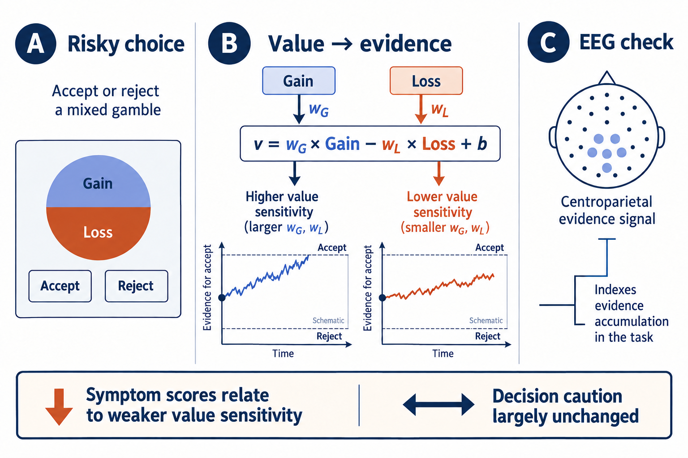
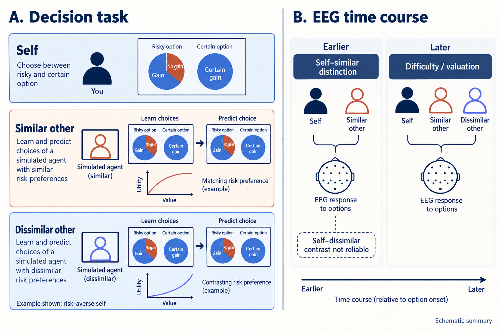
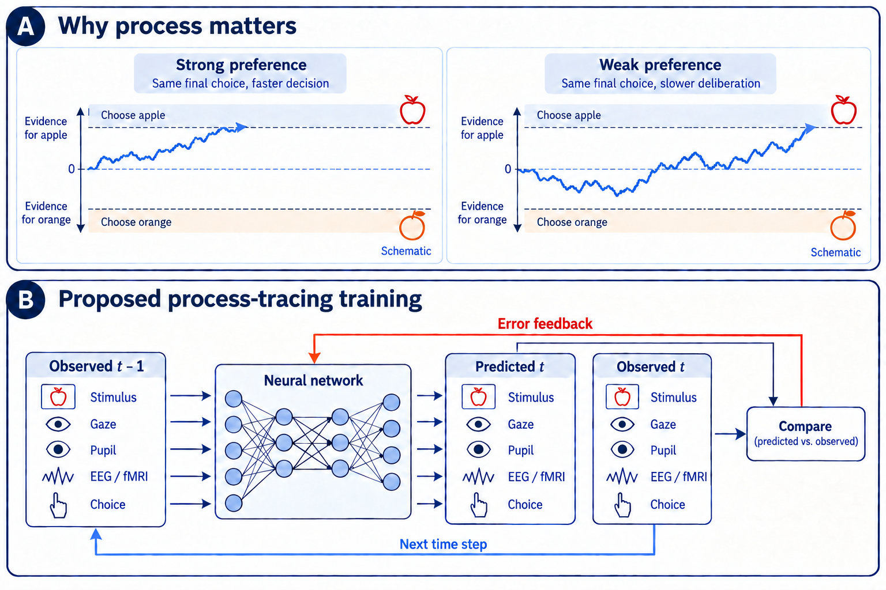
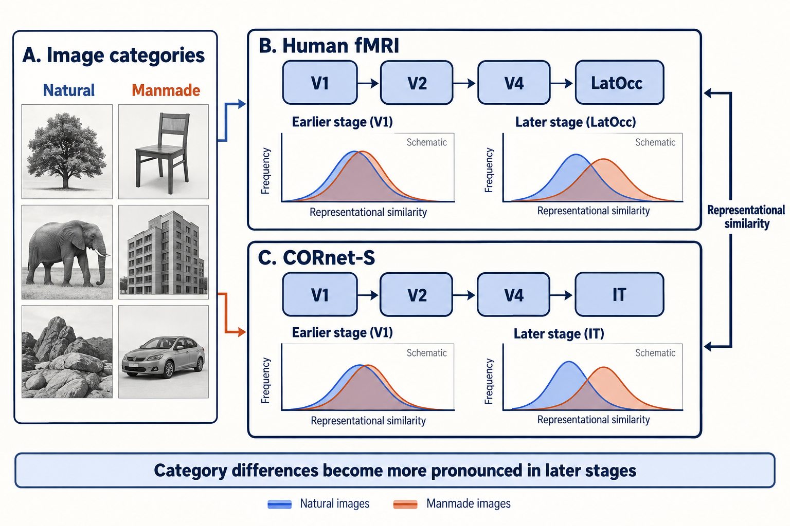
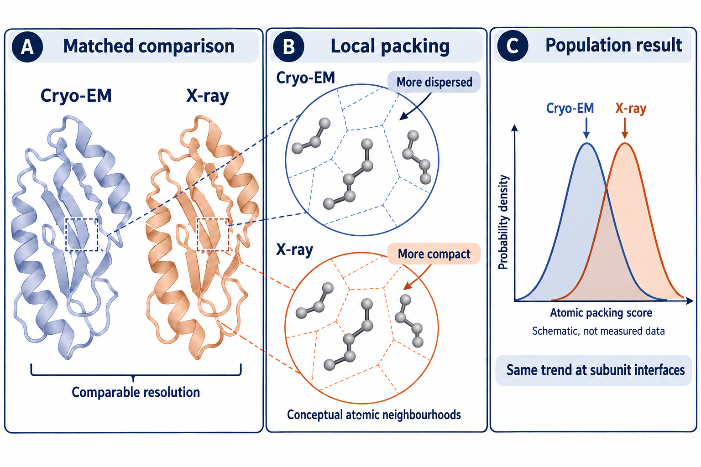

Publications
Research and writing
Articles, conference work, and preprints on decision processes, social inference, and human–AI interaction.
Conceptual illustrations accompany each paper. Open an image for a closer view; quantitative results are in the linked papers.
Preprints
-
2026 · PsyArXiv
Large language models infer hidden preferences from eye movements but fail to exploit response times
Gaze cues helped models infer preferences; response times were used less effectively than by humans. Competitive offers did not imply equally accurate preference recovery.
View preprint -

2026 · bioRxiv · under review
Attenuation of value-to-evidence translation drives biased decision making in anxiety and depression
Higher anxiety and depression symptoms were associated with weaker value sensitivity in evidence accumulation, while decision caution remained largely unchanged.
View preprint -
2026 · bioRxiv
Humans integrate gaze and decision cues for inferring preferences in social interactions
In 75 dyads, choices, timing, and gaze informed preference learning. Gaze access changed cue use without improving overall performance.
View preprint -

2025 · PsyArXiv
Neural dynamics of predicted decisions for similar and dissimilar others
An earlier self–other signal was clearest for similar-other predictions; a later difficulty-related signal was shared across decision types.
View preprint


Articles and conference work
-

2024 · Decision, 11(4), 468–480
From DDMs to DNNs: Using process data and models of decision making to improve human–AI interactions
A perspective on training AI with decision-process data and evidence-accumulation models, with proposed applications to human–AI interaction.
View article -

2022 · Neuromatch Conference
Differential representation of natural and manmade images in the human ventral visual stream
Natural and manmade image representations diverged more in later visual regions, with a corresponding pattern in CORnet-S.
View preprint -

2022 · IUCrJ, 9, 98–103 · online December 2021
Comparison of side-chain dispersion in protein structures determined by cryo-EM and X-ray crystallography
At comparable resolutions, cryo-EM structures showed more dispersed side-chain packing than X-ray structures, including at protein interfaces.
View article